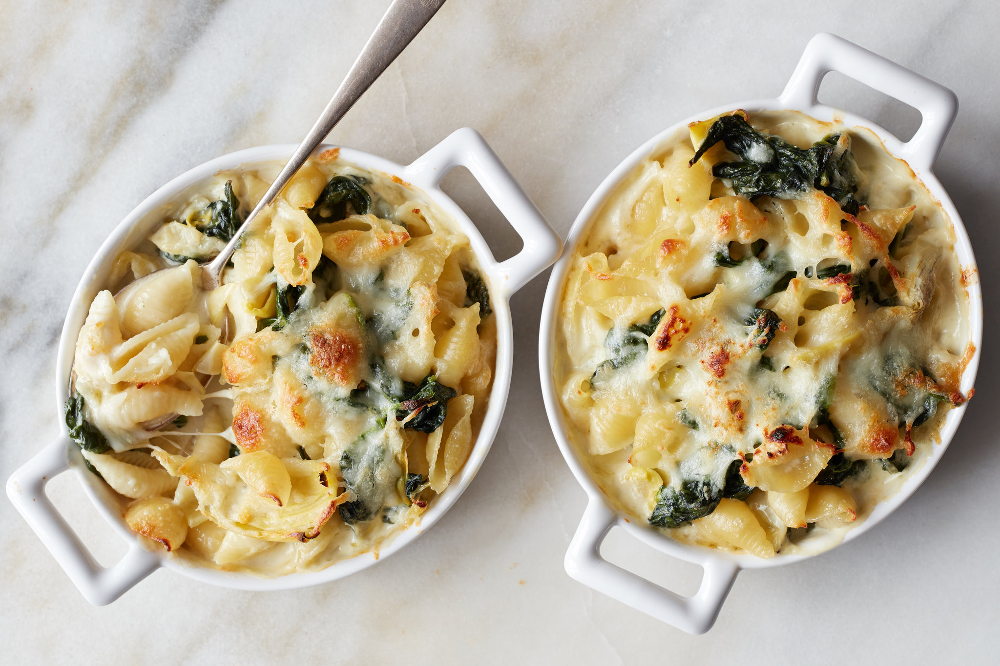

Home
Spinach Artichoke Pasta

This creamy spinach artichoke pasta has all the flavors you love in spinach artichoke dip in a sauce for pasta! Fettuccine stands up nicely with this rich sauce, but rotini or farfalle would work, too. Be sure and keep some of the pasta cooking water in case you prefer a thinner sauce. It’s optional, but fresh herbs, such as parsley, thyme, or snipped chives make a nice garnish.
Ingredients
- 6 ounces frozen chopped spinach, thawed
- 16 ounces fettuccine
- 1/2 cup pasta water, or as needed
- 8 ounces cream cheese, at room temperature
- 1/2 cup heavy cream
- 2 cloves garlic, minced
- 3/4 cup shredded Parmesan cheese
- 1/3 cup shredded mozzarella cheese
- 1/3 cup sour cream
- 1/4 cup mayonnaise
- 1 1/2 cups canned artichokes, drained and chopped
- salt and freshly ground black pepper to taste
- fresh herbs, for garnish (optional)
Directions
- Place thawed spinach between several layers of paper towels. Roll up like a jelly roll and press firmly. Unroll spinach, place on a plate, fluff with a fork, and set aside.
- Fill a large pot with lightly salted water and bring to a rolling boil. Cook fettuccine at a boil until tender yet firm to the bite, about 8 minutes. Drain, and reserve 1/2 cup pasta water. Set aside.
- Meanwhile, cut cream cheese into 1/2-inch chunks. Place in a non-stick skillet over medium-low heat, and add cream, and stir until cream cheese melts.
- Add garlic, Parmesan, and mozzarella and cook, stirring, until cheeses are melted and sauce is bubbly. Add sour cream and mayonnaise; stir until well blended.
- Add spinach and artichokes, and cook, stirring until heated through, about 2 minutes. Add pasta water 1 tablespoon at a time to loosen the sauce, if desired.
- Season sauce with salt and pepper. Stir in drained fettuccine, garnish with fresh herbs, and serve.